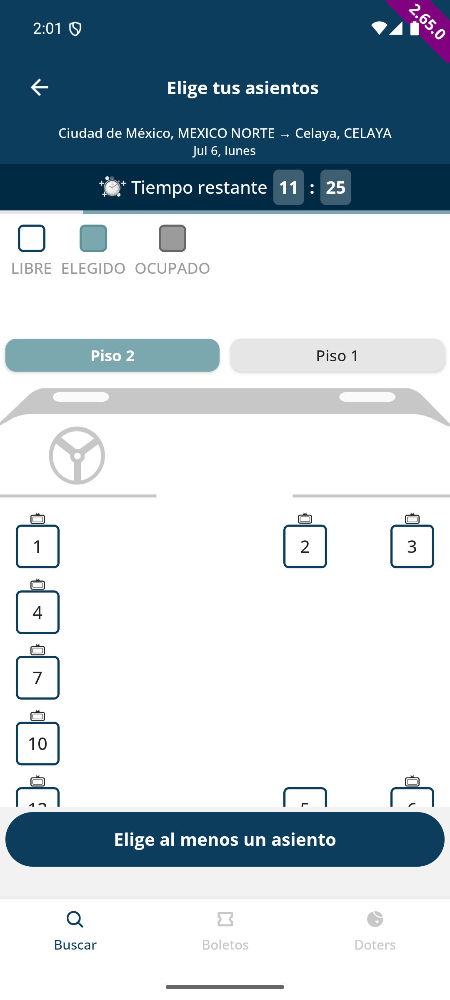
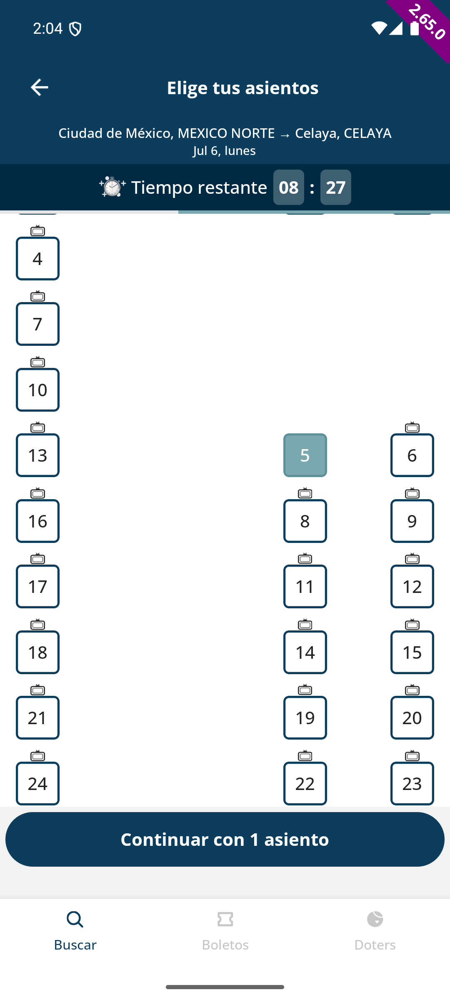
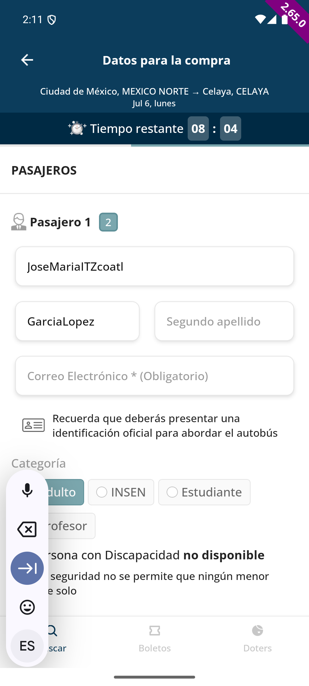

| Carta | Nodo | Intención | Resultado |
|---|---|---|---|
| C1 | S0 Búsqueda | Origen = Destino (misma ciudad) | Sin bug |
| C2 | S1 Horario | Elegir corrida, back, elegir otra distinta | Sin bug |
| C3 | S2 Asientos | Seleccionar/deseleccionar el mismo asiento repetidamente y rápido | Bug confirmado |
| C4 | S3 Pasajeros | Nombre/apellido con caracteres especiales (guion, guion bajo, números) | Bug confirmado |
Intención: ¿Qué pasa si el usuario escribe la misma ciudad como origen y destino?
Resultado: la app responde "No se encontraron resultados" — bien manejado, sin necesidad de validación adicional en el formulario.
Intención: elegir una corrida, ver asientos, dar back a la lista de horarios, y elegir una corrida distinta — ¿arrastra el asiento o el estado de la corrida anterior?
Resultado: el mapa de asientos de la nueva corrida carga limpio, sin ningún asiento pre-seleccionado y con el botón correctamente reseteado a "Elige al menos un asiento".
Pregunta abierta (no es bug, solo observación): el temporizador de hold parece ser una sola cuenta continua de sesión — no se reinicia al cambiar de corrida dentro de la misma búsqueda. Vale la pena confirmar si ese es el diseño esperado.
Intención: seleccionar y deseleccionar el mismo asiento varias veces seguidas y rápido, simulando un usuario indeciso o con dedo tembloroso.
Resultado: tras la secuencia de taps rápidos, la pantalla de selección de asientos quedó sin responder a ningún tap — ni otros asientos, ni el tab "Piso 1/Piso 2" — por varios minutos. El scroll y el temporizador de hold seguían funcionando con normalidad (la app no se congeló por completo), pero el botón final "Continuar" quedó permanentemente sin reaccionar durante el resto de la sesión de compra, bloqueando por completo el avance.
Por qué importa: este flujo toca inventario de asientos y el hold de compra — un usuario real que toque su asiento varias veces (algo común, sobre todo en pantallas táctiles con lag) puede quedar atorado sin poder completar su compra, sin ningún mensaje de error que le explique qué pasó. Consistente con una condición de carrera: cada tap dispara una petición asíncrona de hold/liberación de asiento, y taps más rápidos que la respuesta de red parecen dejar el manejador de toques en un estado bloqueado.
Severidad sugerida: Media-Alta (bloquea la compra completa en ese intento, aunque no corrompe datos ni genera cobros duplicados que se hayan observado). Prioridad: a discutir con el equipo — depende de qué tan común sea el patrón de taps rápidos en usuarios reales.


Intención: escribir nombre y apellido con guion, guion bajo y números, incluyendo apellidos compuestos reales (p. ej. "García-López").
Resultado: el campo filtra silenciosamente guiones, guiones bajos y números — no aparece ningún mensaje ni indicio de que el texto fue modificado; el usuario ve simplemente que su apellido compuesto quedó pegado sin el guion ("Garcia-Lopez" → "GarciaLopez").
Por qué importa: los apellidos compuestos con guion son comunes y legítimos en varios países de habla hispana. Filtrar el carácter sin avisar puede generar un boleto con un nombre que no coincide exactamente con la identificación oficial del pasajero — un problema real dado que la app misma advierte "deberás presentar una identificación oficial para abordar el autobús".
Severidad sugerida: Media (no bloquea la compra, pero puede generar boletos con datos de identidad inexactos sin que el usuario lo note). Prioridad: media-alta por el riesgo de abordaje con datos no coincidentes.

Se recomienda: (1) confirmar C3 con el equipo de producto/desarrollo y decidir si se reporta como bug en Linear, (2) considerar promover C1 y C2 a la matriz de línea base como casos de regresión ya que confirman comportamiento correcto en escenarios de riesgo, y (3) completar C5/C6 en una próxima sesión de exploración.